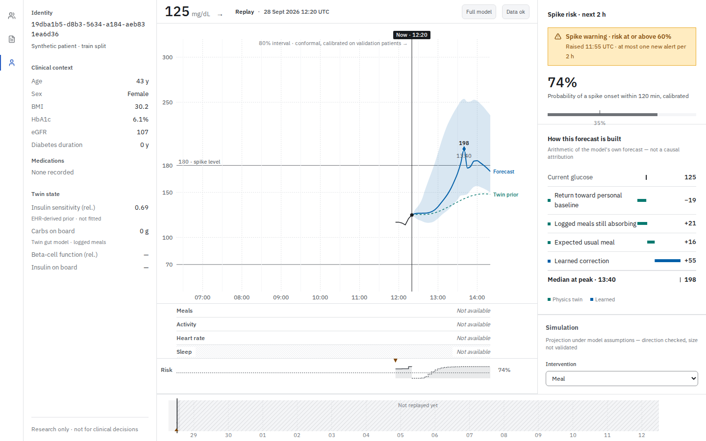
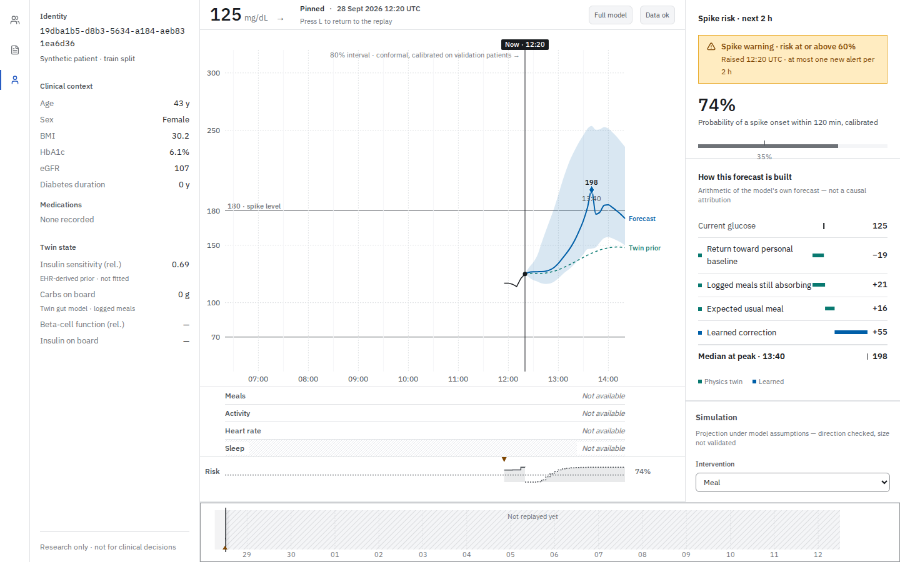
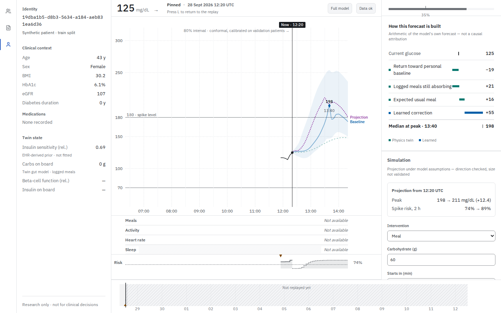
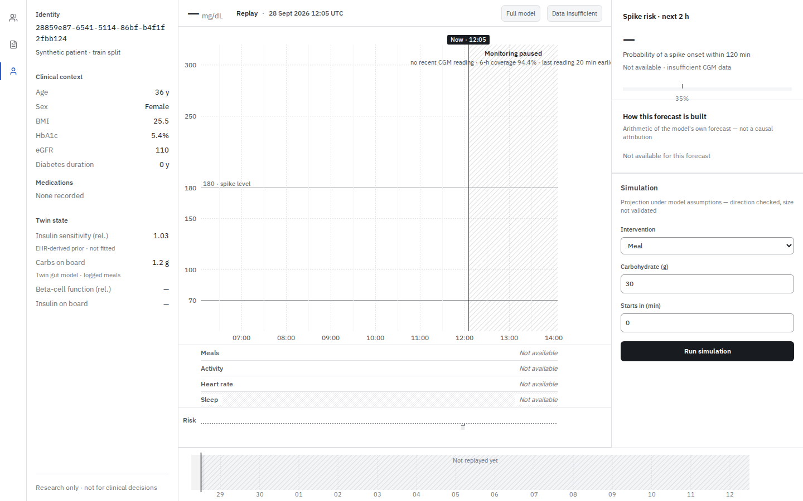
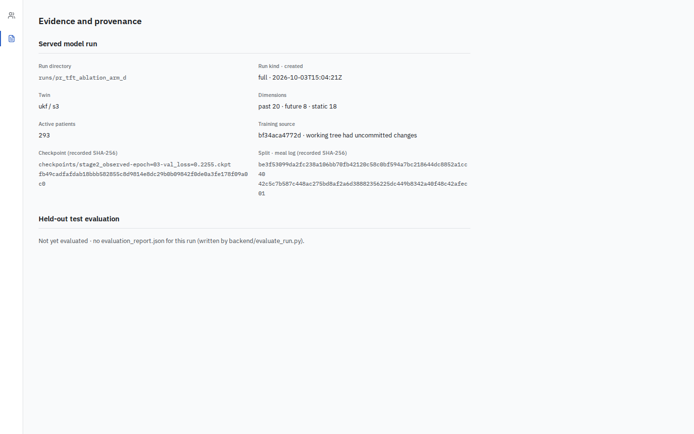

A synthetic subject. A two-hour forecast. An explicit uncertainty.
BGS College of Engineering and Technology
East West Institute of Technology




Mock-real comparator
AUROC 0.932 (acceptance target ≤ 0.65)
Clinical efficacy is unestablished. Protocol amendments remain pending co-author sign-offs; no human efficacy or cross-center transfer is claimed.
